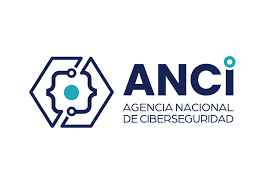

Normativa CSIRT en Chile
Cumplimiento de la Ley Marco de Ciberseguridad (Ley 21.575). Asesoría especializada en implementación de Equipos de Respuesta a Incidentes de Seguridad Informática según normativa chilena vigente.
¿Qué es un CSIRT?
Un CSIRT (Computer Security Incident Response Team) o Equipo de Respuesta a Incidentes de Seguridad Informática es una unidad organizacional especializada responsable de recibir, analizar, coordinar y responder a incidentes de ciberseguridad.
Obligatoriedad en Chile
Con la publicación de la Ley Marco de Ciberseguridad (Ley 21.575) en mayo de 2024, los operadores críticos y esenciales en Chile deben contar con un CSIRT o capacidad de respuesta a incidentes formalizada antes de 2026.



En Chile, el CSIRT Nacional (CSIRT-CL), dependiente de la Agencia Nacional de Ciberseguridad, coordina la respuesta a incidentes a nivel país. Las organizaciones deben establecer sus propios CSIRTs institucionales que se articulen con el CSIRT Nacional.
Marco Normativo Chileno para CSIRT
Conoce la normativa vigente en Chile que regula la creación y operación de CSIRTs:
Ley Marco de Ciberseguridad
Publicada: Mayo 2024
- Crea la Agencia Nacional de Ciberseguridad
- Establece obligación de CSIRT para operadores críticos
- Notificación obligatoria de incidentes (24-72 horas)
- Designación de Oficial de Ciberseguridad
- Implementación gradual hasta 2026
- Sanciones por incumplimiento
Reglamento de la Ley
En elaboración - 2024/2025
- Detallará requisitos específicos de CSIRT
- Definirá operadores críticos y esenciales
- Especificará plazos de notificación
- Establecerá estándares técnicos mínimos
- Protocolos de coordinación con CSIRT-CL
Regulaciones por Industria
Vigente según sector
- SBIF Circular 3460 (Bancos)
- CMF (Mercado de Valores)
- Superintendencia de Salud
- Ministerio de Energía
- Subtel (Telecomunicaciones)
Normas Técnicas de Referencia
Internacionales aplicables
- ISO/IEC 27035 (Gestión de Incidentes)
- NIST SP 800-61 (Computer Security Incident Handling)
- FIRST (Forum of Incident Response Teams)
- ISO/IEC 27001 (SGSI)
Ley Marco de Ciberseguridad y CSIRT
La Ley 21.575 establece requisitos específicos para la implementación de CSIRTs en organizaciones chilenas:
Operadores Críticos y Esenciales
Sectores obligados a tener CSIRT: energía, telecomunicaciones, transporte, agua potable, salud, banca, servicios financieros, administración del Estado y otros definidos por la Agencia.
Oficial de Ciberseguridad
Designación obligatoria de un responsable con formación y experiencia adecuada. Debe reportar a la alta dirección y coordinar con el CSIRT institucional y CSIRT-CL.
Notificación de Incidentes
Obligación de reportar incidentes significativos al CSIRT-CL en plazos establecidos: 24 horas para incidentes críticos, 72 horas para incidentes graves.
Capacidad de Respuesta
Las organizaciones deben contar con personal capacitado, procedimientos documentados y herramientas tecnológicas para detectar, analizar y responder a incidentes.
Coordinación con CSIRT-CL
Los CSIRTs institucionales deben coordinarse con el CSIRT Nacional, compartir información de amenazas y seguir los protocolos establecidos por la Agencia.
Cronograma de Implementación
Implementación gradual: 2024-2025 para operadores críticos, 2026 para operadores esenciales. Plazos específicos según decreto reglamentario.
Requisitos para CSIRT en Chile
Según la normativa vigente, un CSIRT en Chile debe cumplir con los siguientes requisitos:
🏢 Estructura Organizacional
Definición formal de roles, responsabilidades y cadena de mando. Integración con la estructura organizacional de la entidad.
👥 Personal Capacitado
Equipo con formación en ciberseguridad, análisis forense, respuesta a incidentes. Certificaciones recomendadas (GCIH, GCFA, CEH).
📄 Procedimientos Documentados
Playbooks y runbooks para diferentes tipos de incidentes. Procesos de detección, análisis, contención, erradicación y recuperación.
🛠️ Herramientas Tecnológicas
SIEM, EDR, sistemas de ticketing, herramientas de análisis forense, plataformas de comunicación segura.
📡 Canales de Comunicación
Mecanismos seguros para recepción de reportes de incidentes (email, teléfono, portal web). Disponibilidad 24/7 para incidentes críticos.
🤝 Coordinación Externa
Protocolos de coordinación con CSIRT-CL, fuerzas policiales (PDI, Brigada del Delito Informático), y otros CSIRTs sectoriales.
📊 Métricas y Reportes
Indicadores de desempeño (MTTD, MTTR), reportes periódicos a la dirección, estadísticas de incidentes y lecciones aprendidas.
🔄 Mejora Continua
Revisiones periódicas de procedimientos, ejercicios de simulación (tabletop exercises), actualización constante de capacidades.
Nuestro Servicio de Asesoría en Normativa CSIRT
Te acompañamos en el cumplimiento de la Ley Marco de Ciberseguridad y la implementación de tu CSIRT según normativa chilena:
Evaluación de Cumplimiento Normativo
Analizamos tu situación actual frente a los requisitos de la Ley 21.575 y normativa sectorial aplicable. Identificamos brechas y definimos plan de cumplimiento.
Diseño del CSIRT Institucional
Diseñamos la estructura organizacional del CSIRT: definición de roles (Manager, Analistas L1/L2/L3), perfiles requeridos, plan de contratación o externalización.
Desarrollo de Procedimientos
Elaboramos playbooks y runbooks para respuesta a incidentes alineados con estándares ISO 27035, NIST 800-61 y requisitos de la Agencia Nacional de Ciberseguridad.
Implementación de Herramientas
Asesoramos en selección e implementación de tecnologías: SIEM, EDR, sistemas de ticketing, herramientas forenses y plataformas de comunicación segura.
Capacitación del Equipo
Formación especializada para analistas CSIRT en detección, análisis, contención y erradicación de incidentes. Certificaciones y entrenamiento práctico.
Protocolos de Coordinación
Establecemos procedimientos de coordinación con CSIRT-CL, notificación de incidentes según plazos legales, y comunicación con autoridades competentes.
Ejercicios de Simulación
Realizamos tabletop exercises y simulaciones de incidentes para validar procedimientos, medir tiempos de respuesta y identificar áreas de mejora.
Documentación para Cumplimiento
Preparamos toda la documentación requerida para demostrar cumplimiento ante la Agencia Nacional de Ciberseguridad y auditores.
Puesta en Operación
Acompañamiento en la puesta en marcha del CSIRT, coordinación inicial con CSIRT-CL, y establecimiento de canales de comunicación oficiales.
Soporte Continuo y Mejora
Asesoría post-implementación, revisiones periódicas de cumplimiento, actualización de procedimientos según cambios normativos y mejora continua.
¿Qué Incluye Nuestro Servicio?
- Expertos en Normativa Chilena: Conocimiento profundo de Ley 21.575 y regulaciones sectoriales
- Consultores Certificados: Profesionales con certificaciones GCIH, GCFA, CISSP, ISO 27035
- Metodología Probada: Enfoque basado en estándares internacionales y requisitos locales
- Documentación Personalizada: Procedimientos adaptados a tu organización y sector
- Coordinación con CSIRT-CL: Asesoría en articulación con el CSIRT Nacional
- Capacitación Especializada: Formación para tu equipo en respuesta a incidentes
- Soporte en Auditorías: Acompañamiento en verificaciones de cumplimiento
- Actualización Normativa: Alertas sobre cambios en legislación de ciberseguridad


Beneficios del Cumplimiento Normativo CSIRT
Cumplimiento Legal
Evita sanciones y multas por incumplimiento de la Ley Marco de Ciberseguridad. Demuestra debida diligencia en protección de activos digitales.
Mejor Capacidad de Respuesta
Reduce drásticamente el tiempo de detección y respuesta a incidentes, minimizando impacto operacional y financiero.
Coordinación Nacional
Acceso a inteligencia de amenazas del CSIRT-CL, coordinación con otras organizaciones y apoyo en incidentes complejos.
Madurez en Seguridad
Eleva el nivel de madurez de ciberseguridad de tu organización, mejorando la postura general de seguridad.
🔒 Cumple con la Ley Marco de Ciberseguridad
No esperes al último minuto. La implementación de un CSIRT requiere tiempo y planificación. Nuestros expertos te guiarán en el cumplimiento de la normativa chilena vigente.
Solicitar Asesoría CSIRT